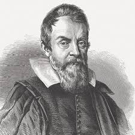

Galileu Galilei
"E, no entanto, ela se move."
Galileu Galilei foi um físico, matemático, astrônomo e filósofo florentino que desempenhou um papel fundamental na Revolução Científica. Frequentemente chamado de "pai da astronomia observacional", ele aprimorou significativamente o telescópio óptico e o apontou para o céu, revelando maravilhas nunca antes vistas. Entre suas descobertas mais notáveis estão as quatro maiores luas de Júpiter (hoje conhecidas como luas galileanas: Io, Europa, Ganimedes e Calisto), as fases de Vênus (que provaram que o planeta orbita o Sol), as manchas solares e o relevo acidentado da Lua, contrariando a ideia aristotélica de que os corpos celestes eram esferas perfeitas. Sua defesa do heliocentrismo de Copérnico o colocou em conflito direto com a Inquisição Romana, levando-o a passar seus últimos anos em prisão domiciliar, mas seu legado como um dos maiores cientistas da história permanece inabalável.
